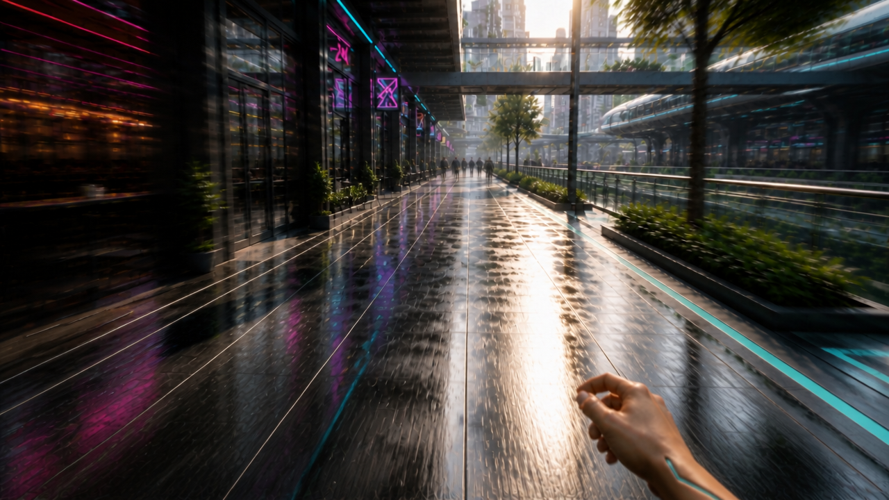
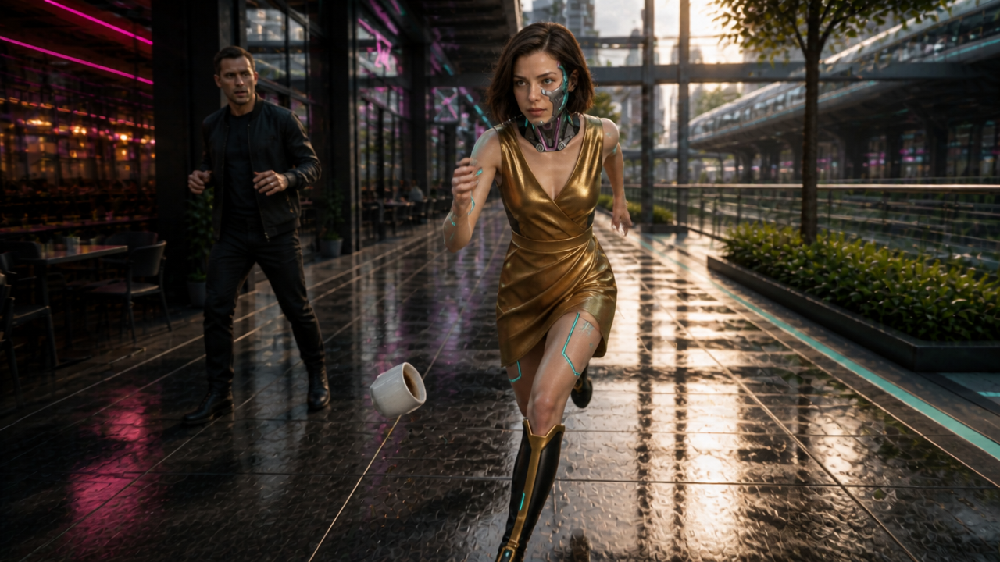

Cup-free fast first-person approach
Sunlit wet cyberpunk cafe walkway

No visible cups or nearby patron; one low right running hand. Strong edge blur with readable central lane and established city.
What still needs testing
- Static frame cannot establish forward parallax, running speed or head turn.
Riley beside an already-falling cup
Sunlit wet cyberpunk cafe walkway

Approved bob, asymmetric face/neck cyberware, gold mini outfit, natural skin with narrow chrome lines and tall black/gold boots broadly present. Single cup already airborne, visible gap from every hand; patron hands empty.
What still needs testing
- Cup is lower, around knee height, rather than upper thigh; catch requires a quick short bend.
- Cup is on image-left/Riley anatomical-right; avoid imposing conflicting anatomical side in motion.
- Front view repeats cafe-left background from FPP; exact reverse-angle geography and on-screen eye flick need motion/edit review.
- This is assistant-approved for a cheap test, not a user selection.